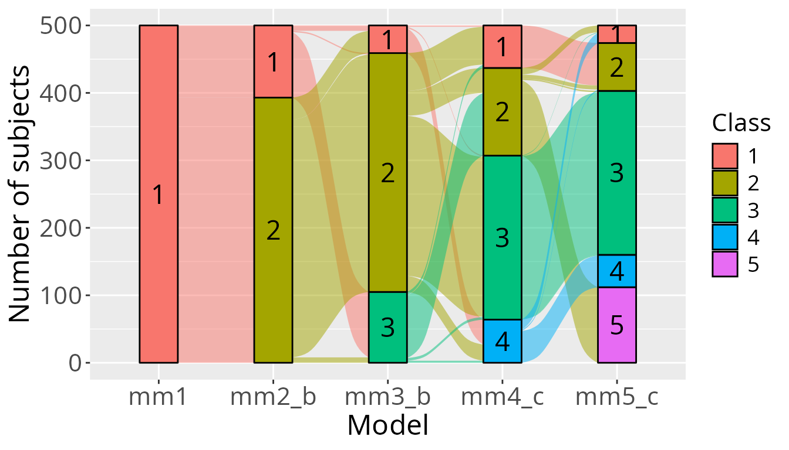
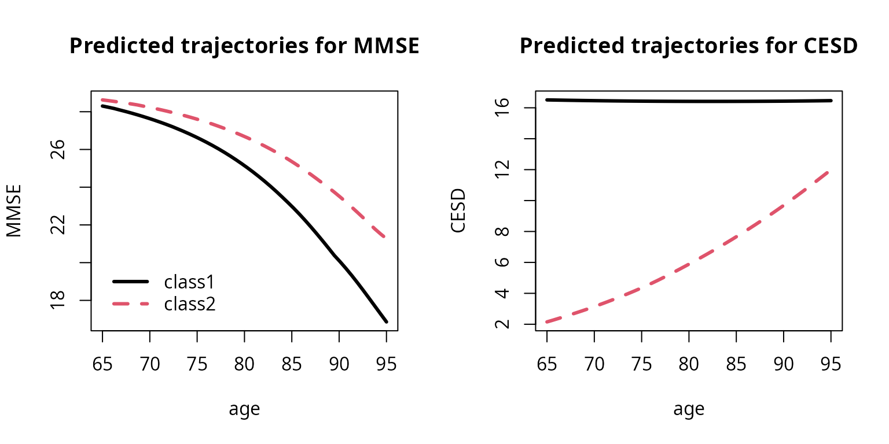

How to estimate a multivariate latent class mixed model using mpjlcmm function
Source:vignettes/multivariate_latent_class_model_with_mpjlcmm.Rmd
multivariate_latent_class_model_with_mpjlcmm.RmdBackground and definitions
The latent class mixed model consists in assuming that the population is heterogeneous and composed of \(G\) latent classes. In the multivariate case, the latent classes are defined according to \(K\) longitudinal outcomes, resulting in \(G\) groups characterized by \(G\) sets of \(K\) mean profiles of trajectories.
The multivariate latent class mixed model
Latent class membership is defined by a discrete random variable \(c_{i}\) that equals \(g\) if subject \(i\) belongs to latent class \(g\) (\(g\) = 1, …,\(G\)). The variable \(c_{i}\) is latent; its probability is described using a multinomial logistic model according to covariates \(X_{ci}\):
\(\pi_{ig}= P(c_{i} = g|X_{ci}) = \frac{\exp(\xi_{0g}+X_{ci}\xi_{1g})}{ \sum_{l=1}^{G}\exp(\xi_{0l}+X_{ci}\xi_{1l})}\)
where \(\xi_{0g}\) is the intercept for class \(g\) and \(\xi_{1g}\) is the q1-vector of class-specific parameters associated with the q1-vector of time-independent covariates \(X_{ci}\). For identifiability, \(\xi_{0G} = 0\) and \(\xi_{1G} = 0\). When no covariate predicts the latent class membership, this model reduces to a class-specific probability.The trajectories of each \(Y_k\) for \(k=1,..,K\) are defined conditionally to the latent class. For Gaussian outcomes, conditional on class \(g\), the model is a linear mixed model defined for subject \(i\) at occasion \(j\) by:
\[Y_{kij}|_{c_{i}=g} = X_{2kij}\beta_k+X_{3kij}\gamma_{kg}+Z_{kij}b_{ki}+\epsilon_{kij}\]
where \(X_{2kij}\), \(X_{3kij}\) and \(Z_{kij}\) are vectors of covariates respectively associated with common fixed effects over classes \(\beta_k\), class-specific fixed effects \(\gamma_{kg}\) and with individual random effects \(b_{ki}|_{ci=g}\) called \(b_{kig}\) whose distributions are now class-specific. \(X_{2k}\) and \(X_{3k}\) can’t have common variables.
Neither the random effects nor the error measurements are correlated between outcomes. So conditionally to the latent classes the \(K\) outcomes are independent.
For curvilinear outcomes, we use a latent process model defined by:
\[Y_{ijk}|_{c_{i}=g} = H_k(~ X_{2ijk}\beta_k+X_{3ijk}\gamma_{gk}+Z_{ijk}b_{ik}+\epsilon_{ijk} ~; \eta_k)\]
where \(H_k\) is a link function parameterized by \(\eta_k\). \(H^{-1}\) can belong to the family of linear functions, rescaled Beta cumulative distribution function, or quadractic I-splines functions. Note however that the mpjlcmm function only supports continuous outcomes, so the IRT models are not available for the moment.
Posterior classification
In models involving latent classes, a posterior classification of the subjects in each latent class can be made. It is based on the posterior calculation of the class-membership probabilities and is used to characterize the classification of the subjects as well as to evaluate the goodness-of-fit of the model.
Posterior class-membership probabilities are computed using the Bayes theorem as the probability of belonging to a latent class given the whole information collected. In a longitudinal model, they are defined for subject \(i\) and latent class \(g\) as:
\[\hat{\pi}_{ig}^Y=P(c_{i}=g|X_{i},Y_{i},\hat{\theta}_{G})\]
where : \(\hat{\theta}_{G}\) is the vector of parameters estimated in the \(G\) latent class model.
A bivariate example
In this example we study simultaneously the trajectories of a cognitive marker (MMSE) and a depression scale (CESD) in a sample of old people (aged 65 years old and over at inclusion) followed for up to 15 years. The two outcomes have a skewed distribution, so we will use latent process models with I-splines link functions.
Model considered
We consider class specific linear trajectories with age without further ajustement. For class \(g\), subejct \(i\) and repeated measurement \(j\), the model is:
\[MMSE_{ij}|_{c_{i}=g}=\beta_{10g}+\beta_{11g}age_{ij}+u_{10ig}+u_{11ig}age_{ij}+\epsilon_{1ij}\]
\[CESD_{ij}|_{c_{i}=g}=\beta_{20g}+\beta_{21g}age_{ij}+u_{20ig}+u_{21ig}age_{ij}+\epsilon_{2ij}\]
Where : \(u_{kig} \sim \mathcal{N}(0,B_{kg})\) and \(\epsilon_{ij} \sim \mathcal{N}(0,\sigma^2)\).
Estimate the model with only one class (G=1)
To estimate a multivariate model, we define first each univariate submodel with the appropriate function. As we use here latent process models, we use the lcmm function.
We begin with the MMSE :
mMMSE <- lcmm(MMSE ~ I((age-65)/10), random =~I((age-65)/10), subject='ID', data = paquid,
link ="5-quant-splines", verbose=FALSE)
summary(mMMSE)
General latent class mixed model
fitted by maximum likelihood method
lcmm(fixed = MMSE ~ I((age - 65)/10), random = ~I((age - 65)/10),
subject = "ID", link = "5-quant-splines", data = paquid,
verbose = FALSE)
Statistical Model:
Dataset: paquid
Number of subjects: 500
Number of observations: 2214
Number of observations deleted: 36
Number of latent classes: 1
Number of parameters: 11
Link function: Quadratic I-splines with nodes
0 25 27 29 30
Iteration process:
Convergence criteria satisfied
Number of iterations: 32
Convergence criteria: parameters= 1.5e-08
: likelihood= 1.4e-06
: second derivatives= 1.2e-07
Goodness-of-fit statistics:
maximum log-likelihood: -4687.54
AIC: 9397.08
BIC: 9443.45
Discrete posterior log-likelihood: -4677.75
Discrete AIC: 9377.5
Mean discrete AIC per subject: 9.3775
Mean UACV per subject: 9.3762
Mean discrete LL per subject: -9.3555
Maximum Likelihood Estimates:
Fixed effects in the longitudinal model:
coef Se Wald p-value
intercept (not estimated) 0
I((age - 65)/10) -1.19894 0.07188 -16.681 0.00000
Variance-covariance matrix of the random-effects:
intercept I((age - 65)/10)
intercept 2.23236
I((age - 65)/10) -0.90184 0.86839
Residual standard error (not estimated) = 1
Parameters of the link function:
coef Se Wald p-value
I-splines1 -7.12837 0.24342 -29.284 0.00000
I-splines2 1.04836 0.08124 12.905 0.00000
I-splines3 -0.00109 0.03823 -0.029 0.97718
I-splines4 1.98400 0.03385 58.609 0.00000
I-splines5 1.25589 0.03022 41.554 0.00000
I-splines6 1.00133 0.03617 27.681 0.00000
I-splines7 0.91387 0.02684 34.055 0.00000
We see in the summary that one of the I-splines parameters is very small. To avoid numerical issues in more complex models, we fix this parameter to zero :
binit <- mMMSE$best
binit[7] <- 0
mMMSE1 <- lcmm(MMSE ~ I((age-65)/10), random =~I((age-65)/10), subject='ID', data = paquid,
link ="5-quant-splines", verbose=FALSE, B=binit, posfix=7)
summary(mMMSE1)
General latent class mixed model
fitted by maximum likelihood method
lcmm(fixed = MMSE ~ I((age - 65)/10), random = ~I((age - 65)/10),
subject = "ID", link = "5-quant-splines", data = paquid,
posfix = 7, verbose = FALSE)
Statistical Model:
Dataset: paquid
Number of subjects: 500
Number of observations: 2214
Number of observations deleted: 36
Number of latent classes: 1
Number of parameters: 11
Number of estimated parameters: 10
Link function: Quadratic I-splines with nodes
0 25 27 29 30
Iteration process:
Convergence criteria satisfied
Number of iterations: 1
Convergence criteria: parameters= 1.1e-13
: likelihood= 2.3e-10
: second derivatives= 1.7e-14
Goodness-of-fit statistics:
maximum log-likelihood: -4687.54
AIC: 9395.08
BIC: 9437.23
Discrete posterior log-likelihood: -4677.75
Discrete AIC: 9375.5
Mean discrete AIC per subject: 9.3755
Mean UACV per subject: 9.3762
Mean discrete LL per subject: -9.3555
Maximum Likelihood Estimates:
Fixed effects in the longitudinal model:
coef Se Wald p-value
intercept (not estimated) 0
I((age - 65)/10) -1.19894 0.07188 -16.681 0.00000
Variance-covariance matrix of the random-effects:
intercept I((age - 65)/10)
intercept 2.23236
I((age - 65)/10) -0.90184 0.86839
Residual standard error (not estimated) = 1
Parameters of the link function:
coef Se Wald p-value
I-splines1 -7.12837 0.24343 -29.283 0.00000
I-splines2 1.04836 0.08124 12.905 0.00000
I-splines3 0.00000*
I-splines4 1.98400 0.03385 58.607 0.00000
I-splines5 1.25589 0.03022 41.554 0.00000
I-splines6 1.00133 0.03617 27.681 0.00000
I-splines7 0.91387 0.02684 34.055 0.00000
* coefficient fixed by the user
We use the same specification for CESD. Note however that the specification can differ between the outcomes.
mCESD1 <- lcmm(CESD ~ I((age-65)/10), random =~I((age-65)/10), subject='ID', data = paquid,
link ="5-quant-splines", verbose=FALSE)
summary(mCESD1)
General latent class mixed model
fitted by maximum likelihood method
lcmm(fixed = CESD ~ I((age - 65)/10), random = ~I((age - 65)/10),
subject = "ID", link = "5-quant-splines", data = paquid,
verbose = FALSE)
Statistical Model:
Dataset: paquid
Number of subjects: 500
Number of observations: 2104
Number of observations deleted: 146
Number of latent classes: 1
Number of parameters: 11
Link function: Quadratic I-splines with nodes
0 2 6 12 52
Iteration process:
Convergence criteria satisfied
Number of iterations: 21
Convergence criteria: parameters= 1.9e-10
: likelihood= 8.1e-09
: second derivatives= 3.9e-16
Goodness-of-fit statistics:
maximum log-likelihood: -6331.04
AIC: 12684.07
BIC: 12730.43
Discrete posterior log-likelihood: -6320.34
Discrete AIC: 12662.67
Mean discrete AIC per subject: 12.6627
Mean UACV per subject: 12.6623
Mean discrete LL per subject: -12.6407
Maximum Likelihood Estimates:
Fixed effects in the longitudinal model:
coef Se Wald p-value
intercept (not estimated) 0
I((age - 65)/10) 0.53187 0.05164 10.299 0.00000
Variance-covariance matrix of the random-effects:
intercept I((age - 65)/10)
intercept 2.08271
I((age - 65)/10) -0.43992 0.18055
Residual standard error (not estimated) = 1
Parameters of the link function:
coef Se Wald p-value
I-splines1 -1.66789 0.10563 -15.790 0.00000
I-splines2 1.04688 0.02463 42.503 0.00000
I-splines3 0.74268 0.03772 19.688 0.00000
I-splines4 0.98353 0.03239 30.363 0.00000
I-splines5 1.55698 0.04484 34.726 0.00000
I-splines6 -0.93391 0.16623 -5.618 0.00000
I-splines7 1.38694 0.17715 7.829 0.00000
Based on these two submodels, the multivariate model can then be estimated.
As the two outcomes are independent conditionaly to the latent classes and that we only have one class, the multivariate model is equivalent to the two separated submodel. We can check that the estimations are the same :
cbind(mm1$best, c(mMMSE1$best, mCESD1$best))
[,1] [,2]
I((age - 65)/10) -1.1989362 -1.1989355
varcov 1 2.2323591 2.2323555
varcov 2 -0.9018448 -0.9018425
varcov 3 0.8683880 0.8683859
I-splines1 -7.1283743 -7.1283683
I-splines2 1.0483658 1.0483646
I-splines3 0.0000000 0.0000000
I-splines4 1.9839961 1.9839953
I-splines5 1.2558910 1.2558911
I-splines6 1.0013254 1.0013252
I-splines7 0.9138711 0.9138711
I((age - 65)/10) 0.5318709 0.5318708
varcov 1 2.0827139 2.0827132
varcov 2 -0.4399163 -0.4399158
varcov 3 0.1805552 0.1805550
I-splines1 -1.6678879 -1.6678880
I-splines2 1.0468796 1.0468796
I-splines3 0.7426802 0.7426802
I-splines4 0.9835325 0.9835324
I-splines5 1.5569752 1.5569752
I-splines6 -0.9339131 -0.9339132
I-splines7 1.3869353 1.3869353
Estimate the model with more than one class (G > 1)
With more than one class, we begin also with univariate models and then we estimate the multivariate model. The univariate models do not need to be optimized here. We therefore use the option maxiter=0. We also fix one I-spline parameter to zero as before.
mMMSE2 <- lcmm(MMSE~I((age-65)/10),random=~I((age-65)/10),subject="ID",
link="5-quant-splines",data=paquid,ng=2,mixture=~I((age-65)/10),
B=random(mMMSE1),maxiter=0, posfix=10)
mCESD2 <- lcmm(CESD~I((age-65)/10),random=~I((age-65)/10),subject="ID",
link="5-quant-splines",data=paquid,ng=2,mixture=~I((age-65)/10),
B=random(mCESD1),maxiter=0)
The later model does not specify initial values. They are then extracted from the univariate models. Alternatively, we can use the one class model as starting point, or use a grid search.
mm2_b <- mpjlcmm(longitudinal=list(mMMSE2,mCESD2), subject="ID", ng=2, data=paquid,
B=mm1, posfix=10)
mm2_c <- gridsearch(mpjlcmm(longitudinal=list(mMMSE2,mCESD2), subject="ID", ng=2,
data=paquid, posfix=10), minit=mm1, rep=50, maxiter=50)
We estimate in the following the same model with 3, 4, and 5 classes.
## 3 classes
mMMSE3 <- lcmm(MMSE~I((age-65)/10), random=~I((age-65)/10), subject="ID",
link="5-quant-splines", data=paquid, ng=3, mixture=~I((age-65)/10),
B=random(mMMSE1), maxiter=0, posfix=13)
mCESD3 <- lcmm(CESD~I((age-65)/10), random=~I((age-65)/10), subject="ID",
link="5-quant-splines", data=paquid, ng=3, mixture=~I((age-65)/10),
B=random(mCESD1), maxiter=0)
mm3_a <- mpjlcmm(longitudinal=list(mMMSE3,mCESD3), subject="ID", ng=3, data=paquid, posfix=13)
mm3_b <- mpjlcmm(longitudinal=list(mMMSE3,mCESD3), subject="ID", ng=3, data=paquid, posfix=13, B=mm1)
mm3_c <- gridsearch(mpjlcmm(longitudinal=list(mMMSE3,mCESD3), subject="ID", ng=3,
data=paquid, posfix=13), minit=mm1, rep=50, maxiter=50)
## 4 classes
mMMSE4 <- lcmm(MMSE~I((age-65)/10), random=~I((age-65)/10), subject="ID",
link="5-quant-splines", data=paquid, ng=4, mixture=~I((age-65)/10),
B=random(mMMSE1), maxiter=0, posfix=16)
mCESD4 <- lcmm(CESD~I((age-65)/10), random=~I((age-65)/10), subject="ID",
link="5-quant-splines", data=paquid, ng=4, mixture=~I((age-65)/10),
B=random(mCESD1), maxiter=0)
mm4_a <- mpjlcmm(longitudinal=list(mMMSE4,mCESD4), subject="ID", ng=4, data=paquid, posfix=16)
mm4_b <- mpjlcmm(longitudinal=list(mMMSE4,mCESD4), subject="ID", ng=4, data=paquid, posfix=16, B=mm1)
mm4_c <- gridsearch(mpjlcmm(longitudinal=list(mMMSE4,mCESD4), subject="ID", ng=4,
data=paquid, posfix=16), minit=mm1, rep=50, maxiter=50)
## 5 classes
mMMSE5 <- lcmm(MMSE~I((age-65)/10), random=~I((age-65)/10), subject="ID",
link="5-quant-splines", data=paquid, ng=5, mixture=~I((age-65)/10),
B=random(mMMSE1), maxiter=0 ,posfix=19)
mCESD5 <- lcmm(CESD~I((age-65)/10), random=~I((age-65)/10), subject="ID",
link="5-quant-splines", data=paquid, ng=5, mixture=~I((age-65)/10),
B=random(mCESD1), maxiter=0)
mm5_a <- mpjlcmm(longitudinal=list(mMMSE5,mCESD5), subject="ID", ng=5, data=paquid, posfix=19)
mm5_b <- mpjlcmm(longitudinal=list(mMMSE5,mCESD5), subject="ID", ng=5, data=paquid, posfix=19, B=mm1)
mm5_c <- gridsearch(mpjlcmm(longitudinal=list(mMMSE5,mCESD5), subject="ID", ng=5,
data=paquid, posfix=19), minit=mm1, rep=50, maxiter=50)
We summarize and compare all these estimations with summarytable function :
summarytable(mm1, mm2_a, mm2_b, mm2_c, mm3_a, mm3_b, mm3_c, mm4_a, mm4_b, mm4_c, mm5_a, mm5_b, mm5_c)
G loglik npm BIC %class1 %class2 %class3 %class4 %class5
mm1 1 -11018.58 21 22167.67 100.0
mm2_a 2 -11004.64 26 22170.86 20.8 79.2
mm2_b 2 -10997.88 26 22157.34 21.4 78.6
mm2_c 2 -10997.88 26 22157.34 78.6 21.4
mm3_a 3 -10983.75 31 22160.14 8.2 70.8 21.0
mm3_b 3 -10983.75 31 22160.14 8.2 70.8 21.0
mm3_c 3 -10983.75 31 22160.14 8.2 70.8 21.0
mm4_a 4 -10976.16 36 22176.04 65.0 19.0 7.8 8.2
mm4_b 4 -10979.04 36 22181.80 37.6 13.6 47.8 1.0
mm4_c 4 -10976.16 36 22176.04 12.6 26.0 48.6 12.8
mm5_a 5 -10975.59 41 22205.99 22.0 29.2 30.0 10.6 8.2
mm5_b 5 -10971.30 41 22197.40 28.8 11.6 46.2 1.2 12.2
mm5_c 5 -10970.69 41 22196.17 5.2 14.2 48.6 9.6 22.4
We keep the best model for each number of latent classes and we plot some statistical criteria used to select the optimal number of classes :
summaryplot(mm1, mm2_b, mm3_b, mm4_c, mm5_c)In this application, we will select the 2-class model, which presents better BIC.
We can represent the relation the classes and the flow of the subjects with a sankey plot. This is not yet done automatically in the package.
library(ggalluvial)
library(ggplot2)
## We merge the classification of the 5 models :
class12 <- merge(mm1$pprob[,1:2], mm2_b$pprob[,1:2], by="ID")
colnames(class12) <- c("ID","mm1","mm2_b")
class123 <- merge(class12, mm3_b$pprob[,1:2], by="ID")
colnames(class123) <- c("ID","mm1","mm2_b","mm3_b")
class1234 <- merge(class123, mm4_c$pprob[,1:2], by="ID")
colnames(class1234) <- c("ID","mm1","mm2_b","mm3_b","mm4_c")
class <- merge(class1234, mm5_c$pprob[,1:2], by="ID")
colnames(class) <- c("ID","mm1","mm2_b","mm3_b","mm4_c","mm5_c")
## We plot the flows :
ggplot(class,
aes(axis1 = mm1, axis2 = mm2_b, axis3 = mm3_b, axis4 = mm4_c, axis5 = mm5_c,
fill = after_stat(stratum), label = after_stat(stratum))) +
scale_x_discrete(limits = c("mm1","mm2_b","mm3_b","mm4_c","mm5_c")) +
geom_flow() +
geom_stratum() +
geom_text(stat = "stratum", size = 6) +
theme(legend.position = "right",
axis.title = element_text(size = 18),
axis.text = element_text(size = 16),
legend.title = element_text(size = 16),
legend.text = element_text(size = 14)) +
labs(y = "Number of subjects",
x = "Model",
fill = "Class")
Warning in to_lodes_form(data = data, axes = axis_ind, discern =
params$discern): Some strata appear at multiple axes.
Warning:
[1m
[22m`spread_()` was deprecated in tidyr 1.2.0.
[36mℹ
[39m Please use `spread()` instead.
[36mℹ
[39m The deprecated feature was likely used in the
[34mggalluvial
[39m package.
Please report the issue at
[3m
[34m<https://github.com/corybrunson/ggalluvial/issues>
[39m
[23m.
Warning:
[1m
[22mThe `.dots` argument of `group_by()` is deprecated as of dplyr 1.0.0.
[36mℹ
[39m The deprecated feature was likely used in the
[34mdplyr
[39m package.
Please report the issue at
[3m
[34m<https://github.com/tidyverse/dplyr/issues>
[39m
[23m.
Warning in to_lodes_form(data = data, axes = axis_ind, discern =
params$discern): Some strata appear at multiple axes.
Warning in to_lodes_form(data = data, axes = axis_ind, discern =
params$discern): Some strata appear at multiple axes.
Description of the 2-class model
Summary of the model
summary(mm2_b)
Multivariate joint latent class model for quantitative outcome and competing risks
fitted by maximum likelihood method
mpjlcmm(longitudinal = list(mMMSE2, mCESD2), subject = "ID",
ng = 2, data = paquid, posfix = 10)
Statistical Model:
Dataset: paquid
Number of subjects: 500
Number of longitudinal models: 2
Number of observations: 2214 2104
Number of latent classes: 2
Number of parameters: 27
Number of estimated parameters: 26
Link functions: Quadratic I-splines with nodes 0 25 27 29 30 for MMSE
Quadratic I-splines with nodes 0 2 6 12 52 for CESD
Iteration process:
Convergence criteria satisfied
Number of iterations: 26
Convergence criteria: parameters= 4.2e-06
: likelihood= 8.2e-05
: second derivatives= 1.1e-08
Goodness-of-fit statistics:
maximum log-likelihood: -10997.88
AIC: 22047.76
BIC: 22157.34
Maximum Likelihood Estimates:
Fixed effects in the class-membership model:
(the class of reference is the last class)
coef Se Wald p-value
intercept class1 -1.03757 0.19494 -5.322 0.00000
Longitudinal model for MMSE :
Fixed effects in the longitudinal model:
coef Se Wald p-value
intercept class1 (not estimated) 0.00000
intercept class2 0.34847 0.30384 1.147 0.25143
I(...) class1 -1.41500 0.16752 -8.447 0.00000
I(...) class2 -1.13436 0.08760 -12.949 0.00000
Variance-covariance matrix of the random-effects:
intercept I((age - 65)/10)
intercept 2.17911
I((age - 65)/10) -0.89871 0.83935
Residual standard error: 1 (not estimated)
Parameters of the link functions:
coef Se Wald p-value
MMSE-I-splines1 -6.86640 0.32838 -20.910 0.00000
MMSE-I-splines2 1.04368 0.08112 12.865 0.00000
MMSE-I-splines3 0.00000*
MMSE-I-splines4 1.98366 0.03381 58.679 0.00000
MMSE-I-splines5 1.25600 0.03019 41.597 0.00000
MMSE-I-splines6 1.00043 0.03617 27.658 0.00000
MMSE-I-splines7 0.91330 0.02682 34.050 0.00000
Longitudinal model for CESD :
Fixed effects in the longitudinal model:
coef Se Wald p-value
intercept class1 (not estimated) 0.00000
intercept class2 -2.84768 0.21559 -13.209 0.00000
I(...) class1 -0.02509 0.12124 -0.207 0.83605
I(...) class2 0.70735 0.05778 12.243 0.00000
Variance-covariance matrix of the random-effects:
intercept I((age - 65)/10)
intercept 0.31009
I((age - 65)/10) 0.04817 0.04441
Residual standard error: 1 (not estimated)
Parameters of the link functions:
coef Se Wald p-value
CESD-I-splines1 -3.76547 0.22277 -16.903 0.00000
CESD-I-splines2 1.02786 0.02458 41.825 0.00000
CESD-I-splines3 0.72903 0.03776 19.309 0.00000
CESD-I-splines4 0.98285 0.03241 30.328 0.00000
CESD-I-splines5 1.57674 0.04486 35.144 0.00000
CESD-I-splines6 -0.92716 0.16796 -5.520 0.00000
CESD-I-splines7 1.36802 0.17561 7.790 0.00000
* coefficient fixed by the user
Update the univariate models
The update function returns the \(K\) univariate models used to specify the mpjlcmm model, with updated outputs. The parameters and their estimated variance are replaced by the one optimized in the multivariate framework.
upd_mm2_b <- update(mm2_b)
mMMSE2_biv <- upd_mm2_b[[1]]
mCESD2_biv <- upd_mm2_b[[2]]The prediction functions are called on the mMMSE2_biv and mCESD2_biv objects.
Predictions of the trajectories
Class-specific predictions can be computed for any data contained in a dataframe as soon as all the covariates specified in the model are included in the dataframe. In the next lines, such a dataframe is created by generating a vector of \(age\) values between 65 and 95. The predictions are computed with predictY and plotted with the associated plot function.
## predicted trajectories of the MMSE score
pred_MMSE <- predictY(mMMSE2_biv, data.frame(age=seq(65,95,length.out=50)), var.time = "age")
## predicted trajectories of the CESD score
pred_CESD <- predictY(mCESD2_biv, data.frame(age=seq(65,95,length.out=50)), var.time = "age")
par(mfrow=c(1,2))
plot(pred_MMSE, lwd=3, ylab="MMSE", main="Predicted trajectories for MMSE", legend.loc="bottomleft")
plot(pred_CESD, lwd=3, ylab="CESD", main="Predicted trajectories for CESD", legend=NULL)
To add point by point confidence bands, we use the option draws=TRUE in the predictY call.
Evaluation of the model
Graph of the predictions versus observations
In order to evaluate the fit of the selected model, we plot simultaneously the observations and the predicted values for each latent class.
plot(mMMSE2_biv, which="fit", var.time="age", marg=FALSE, shades = TRUE)
plot(mCESD2_biv, which="fit", var.time="age", marg=FALSE, shades = TRUE)
Classification
The posterior classification of the model is obtained with:
postprob(mm2_b)
Posterior classification based on longitudinal and time-to-event data:
class1 class2
N 107.0 393.0
% 21.4 78.6
Posterior classification table:
--> mean of posterior probabilities in each class
prob1 prob2
class1 0.8280 0.1720
class2 0.1074 0.8926
Posterior probabilities above a threshold (%):
class1 class2
prob>0.7 70.09 87.02
prob>0.8 65.42 78.12
prob>0.9 46.73 64.38
Posterior classification based only on longitudinal data:
class1 class2
N 107.0 393.0
% 21.4 78.6
Class 1 is composed of 107 subjects (21.4%), whereas 393 are in the second class.
We can also see a good discrimination power of the model with a mean posterior probability of 0.8280 for class 1 and 0.8926 for class 2. A satisfactory proportion of subject are also classified with a posterior probability above 0.7.